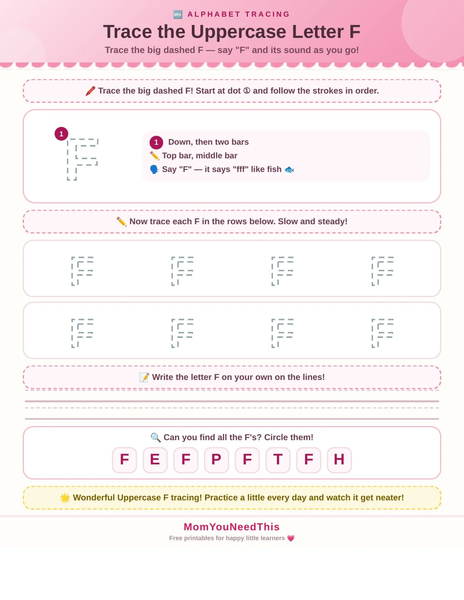

Uppercase Letter F Free Printable Uppercase Letter F Tracing Activity For Kids
Capital F is the letter that knows when to stop — it looks like E, minus the bottom bar. This free printable uppercase letter f tracing worksheet gives toddlers and preschoolers a fun, no-prep way to practice its straight lines — say the F sound from fish and frog as your child traces, print it at home, and learn the letter F through play.
Quick Answer
This free printable helps toddlers and preschoolers practice tracing the uppercase letter F — a straight back with two straight bars. The worksheet includes large guided tracing lines, directional arrows, and fun practice rows that build the letter in order: back first, then the top bar, then the middle bar — and no bottom bar. Download and print at home with no signup needed — perfect for building fine motor skills and letter recognition through hands-on practice.
At a Glance
- Ages: Toddlers and preschoolers
- Activity: Tracing uppercase F — a straight back with two straight bars
- Skills: Letter F formation and pencil control
- Format: Printable tracing worksheet (PDF)
- Cost: Free, no signup
✏️ Trace The Letter F
Use the printable to help your child trace the uppercase letter F, drawing the straight back first and adding just two bars. Practice stopping after the middle bar — adding a third one at the bottom turns F into E — and build confidence with early letter formation and writing skills.
Free Uppercase Letter F Tracing Printable

How To Use This Printable
- Download and print the letter F pages on letter-size paper. The print button opens the full-size page in a new tab if you prefer to print from there.
- Say the letter name and sound together before your child starts: “F says /f/, like fish, frog and fox.”
- Trace slowly: straight back down first, then the top bar, then the middle bar — and stop. Count the bars out loud together: one, two, done.
- Play I-spy with F words around the house — a fork, a flag, a flower in the garden — to lock in the learning.
🔤 All About Capital F
Capital F is a straight line with two shelves. Start at the top and draw the line down to the ground line. Then add the top bar, and a shorter bar at the middle line — and stop there. The missing bottom bar is exactly what makes it an F and not an E, and adding one by accident is the mistake almost every child makes at first.
The letter F makes one clear sound, /f/ — the sound at the start of fish, frog, fox, flower and flag. Those are good words to say out loud while your child traces each row.
Capital F has special jobs: it starts sentences, and it begins names of people and places — like the F in Finn and Flora. Every letter on this page is the big version, so little hands get plenty of practice with its two-bar shape.
Why Trace Uppercase Letters?
Uppercase letters are usually the first ones children learn to write, and F teaches a rare lesson: knowing when a letter is finished. Its strokes are the same straight lines used in E, H and L, so a steady F means those letters come easily too. Every finished F builds fine motor control and early handwriting strength.
🎁 Keep Exploring Free Learning Activities
Discover more printable activities, toddler resources, and learning ideas created for busy parents.
🎁 View All Free Resources❓ Uppercase Letter F Tracing FAQ
Is this uppercase letter F tracing printable really free?
Yes — this uppercase letter F tracing printable is 100% free to download and print at home. No signup and no payment needed. Just tap the download button and print as many copies as you like — print fresh copies whenever your child wants another try at stopping after two bars.
What ages is this printable best for?
It is made for toddlers and preschoolers. Capital F is all straight lines, so it suits children practicing careful strokes — the challenge is not the shape but remembering to stop before the bottom bar. Little ones can enjoy it with a grown-up’s help, while older preschoolers can work on it by themselves.
How can we practice the letter F at home?
Say the letter’s name and sound — /f/, like fish — each time your child starts a row, and count “one bar, two bars, stop!” together. Hunt for capital F at the start of names like Finn and Flora. A few short, playful sessions each week beat one long one.
🔗 More Free Printables You’ll Love
- Free Alphabet Coloring Pages Free printable alphabet coloring pages for little learners.
- Free Lowercase Letter F Tracing Free printable lowercase letter f tracing for little learners.
- Free Uppercase Letter B Tracing Free printable uppercase letter b tracing for little learners.
- Free Uppercase Letter C Tracing Free printable uppercase letter c tracing for little learners.